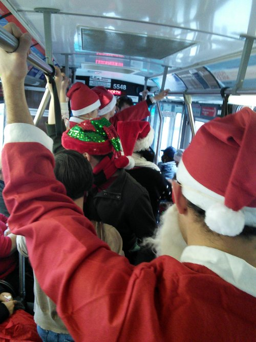
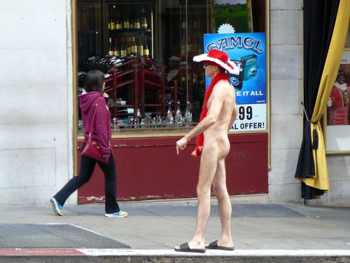
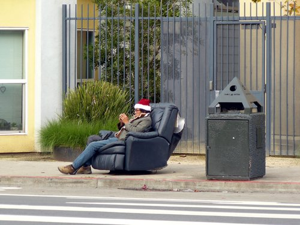
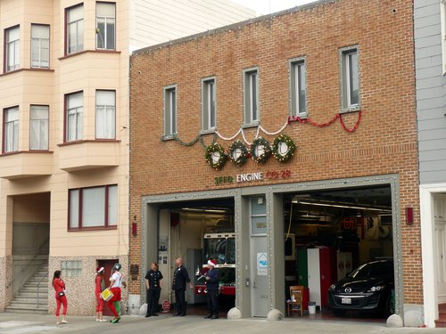
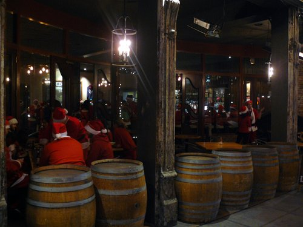

SantaCon
Předem se musím omluvit, že sem nechrlím nějaké příspěvky o tom, jak se mám. Ze začátku pobytu jsem nic moc neprozkoumával, věnoval se spíš práci, a když jsem to začal dohánět, odvykl jsem si už psát sem na blog a spíš jsem hodil nějakou jednu nebo dvě fotky na Facebook. Zkusím to pak ještě trochu retrospektivně shrnout, ale teď to celé přeskočím a napíšu vám o tom, co jsem zažil dneska, protože to stojí za to.
Zažil jsem totiž absolutní “Santa bizár”! Abyste z toho taky něco měli, nafotil jsem ho a pro utužení vaší vánoční nálady zde dávám k dispozici výběr toho nejlepšího.

No a co že se to vlastně dělo? Po pracovní pauze jsem se dnes vydal zase do města, abych něco viděl. Památky a tak. Venku bylo pěkně, takže hurá za turistikou.
- Hned v centru jsem zjistil, že bude nejspíš další Ferguson protest a tak mi mimo jiné pro jistotu zastavili ty slavné lanovky z Powell St., se kterýma jsem chtěl cestu začít.
- Všude byla ohromná spousta lidí převlečených za Santa Clause a skřítky a podobně. Čím bizarnější, tím “lepší”. Byli úplně všude.
- Když jsem chtěl svou turistiku zakončit v odpočinkem nějakém baru kolem Columbus / Broadway, tak jsem zjistil, že všechny bary jsou plné ožralých Santů.
- U Ferlinghettiho knihkupectví jsem potkal místního, který mi vysvětlil, že probíhá SantaCon a že jsem si teda na pivko u baru nemohl vybrat “lepší” dobu. Jestli prý hledám “atmosféru”, tak dnes na ni můžu zapomenout.
- Bary jsem vzdal a vydal se domů. Jenže ať už kvůli SantaConu nebo Fergusonu, hromadná doprava byla absolutně zasekaná a trvalo mi s přebíháním z jedné ulice na druhou skoro 2 hodiny, než jsem chytl něco, co mě další hodinu vezlo domů.
Jinak jsem ale viděl spoustu zajímavých věcí (třeba Lombard Street, Coit Tower, Little Italy) a bylo to vlastně fajn :-D O tom ale zas jindy ;-)







